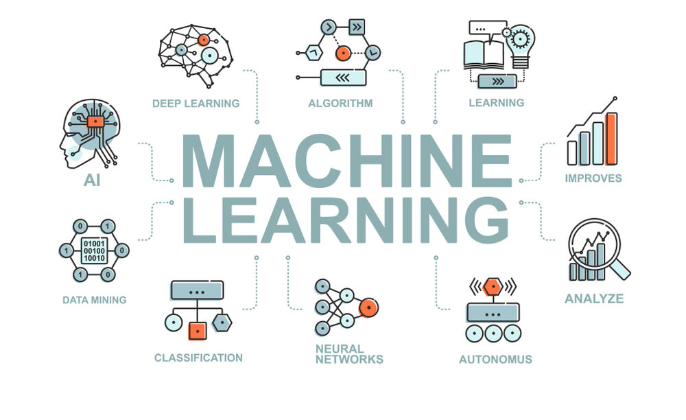
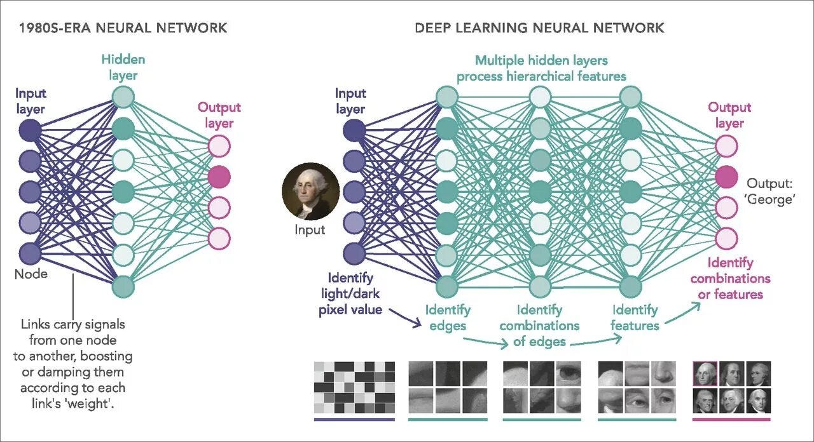

A Inteligência Artificial (IA) é uma área da computação que visa criar sistemas capazes de simular
comportamentos inteligentes, semelhantes aos humanos, como raciocínio, aprendizado, tomada de decisão e
resolução de problemas. A IA abrange uma ampla gama de técnicas e algoritmos, incluindo lógica
simbólica, algoritmos evolutivos e redes neurais artificiais. Esses sistemas podem ser usados em
diversos campos, como robótica, automação, diagnóstico médico, atendimento ao cliente e muito mais. A
evolução da IA tem o potencial de transformar indústrias inteiras, trazendo inovação e desafios éticos,
como a questão da autonomia das máquinas e os impactos no mercado de trabalho.
Ética na Inteligência Artificial
A ética na Inteligência Artificial envolve a reflexão sobre como os sistemas de IA devem ser
projetados e usados para garantir que suas decisões sejam justas, transparentes e livres de
preconceitos. Como a IA é cada vez mais aplicada em áreas como justiça, saúde e segurança, surgem
questões sobre responsabilidade, privacidade e imparcialidade. Um desafio significativo é a
possibilidade de viés nos algoritmos, que podem perpetuar discriminação se não forem adequadamente
treinados e monitorados. Portanto, a construção de sistemas éticos e responsáveis é crucial para
garantir que a IA beneficie a sociedade de maneira justa e segura.
Machine Learning
O Machine Learning (Aprendizado de Máquina) é um subcampo da Inteligência Artificial que permite que os
computadores aprendam a partir de dados e melhorem seu desempenho com o tempo, sem a necessidade de
programação explícita para cada tarefa. Em vez disso, os algoritmos de aprendizado de máquina
identificam padrões e fazem previsões ou decisões com base em dados históricos. O aprendizado de máquina
é usado em uma ampla variedade de aplicações, como reconhecimento de voz, recomendações de produtos,
análise de dados financeiros e detecção de fraudes. Ele é classificado em três tipos principais:
aprendizado supervisionado, não supervisionado e por reforço, dependendo da forma como os dados são
fornecidos e como os modelos aprendem com eles.

Aprendizado Supervisionado
O aprendizado supervisionado é uma das técnicas mais comuns em machine learning, onde o modelo é
treinado usando um conjunto de dados rotulado, ou seja, os dados de entrada são acompanhados de suas
respectivas saídas corretas. O objetivo do modelo é aprender a mapear as entradas para as saídas
corretas, a fim de poder fazer previsões em novos dados. Um exemplo clássico de aprendizado
supervisionado é a classificação de e-mails como "spam" ou "não spam", onde o algoritmo aprende a
partir de um conjunto de e-mails rotulados. Essa abordagem é amplamente utilizada em tarefas de
classificação e regressão.
Deep Learning
O Deep Learning (Aprendizado Profundo) é uma subárea do aprendizado de máquina que se baseia em redes
neurais artificiais com múltiplas camadas (conhecidas como redes neurais profundas). Essas redes são
projetadas para imitar o funcionamento do cérebro humano, com unidades chamadas neurônios, organizadas
em camadas para processar informações de forma hierárquica. O deep learning é particularmente eficaz em
tarefas que envolvem grandes volumes de dados e complexidade, como reconhecimento de imagens,
processamento de linguagem natural, e tradução automática. Ele tem sido responsável por avanços
significativos em áreas como reconhecimento facial, diagnóstico médico automatizado e carros autônomos.

Redes Neurais Convolucionais (CNN)
As Redes Neurais Convolucionais (CNNs) são um tipo de rede neural profunda especialmente eficaz no
processamento de dados com uma estrutura de grade, como imagens e vídeos. Elas utilizam operações de
convolução para detectar características locais nas imagens, como bordas, texturas e formas, e
depois combinam essas características para reconhecer padrões mais complexos. As CNNs são amplamente
usadas em tarefas de visão computacional, como reconhecimento de objetos e segmentação de imagens.
Sua capacidade de aprender automaticamente características a partir dos dados, sem a necessidade de
extração manual, tem revolucionado áreas como diagnóstico médico por imagens e sistemas de
segurança.